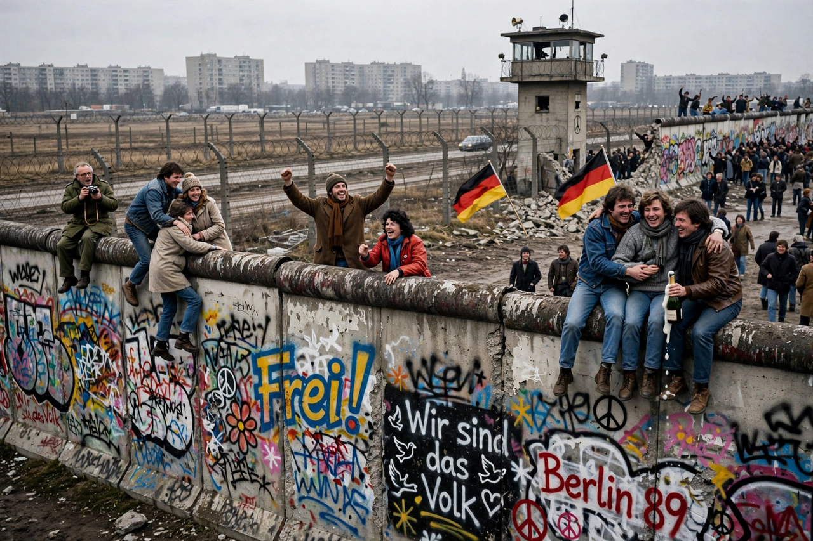

The Berlin Wall (German: Berliner Mauer) was a guarded concrete barrier that encircled West Berlin from 1961 to 1989, separating it from East Berlin and the German Democratic Republic (GDR, East Germany). Construction of the Wall was commenced by the government of the GDR on 13 August 1961. It included guard towers placed along large concrete walls, accompanied by a wide area (later known as the "death strip") that contained anti-vehicle trenches, beds of nails and other defences.
| Berlin Wall | |
|---|---|
 | |
| Location | Berlin, East/West Germany |
| Built | 13 August 1961 |
| Demolished | 9 November 1989 – 1994 |
| Length | 155 km (96 mi) |
| Height | 3.6 m (11.8 ft) |
The Eastern Bloc portrayed the Wall as protecting its population from "fascist elements conspiring to prevent the will of the people" from building a socialist state in the GDR. The authorities officially referred to it as the "Anti-Fascist Protection Rampart" (Antifaschistischer Schutzwall). In practice, the Wall served to prevent the massive emigration and defection that had marked East Germany and the communist Eastern Bloc during the post-World War II period.
After World War II, Germany was divided into four occupation zones. Berlin, located deep within the Soviet zone, was itself divided among the four powers. Between 1949 and 1961, about 2.5 million East Germans fled to the West, many through the relatively open border in Berlin. The Wall was erected to stem this "brain drain". See also Cold War.
The barrier began overnight as barbed wire and cinder blocks and evolved into a sophisticated system: an outer wall facing West Berlin, an inner wall, a raked gravel "death strip", watchtowers (302 by 1989), floodlights, trip-wire alarms, and patrol roads. Checkpoint Charlie became the best-known crossing point for foreigners.
Over its 28 years, around 5,000 people successfully escaped over, under, or through the Wall, by tunnels, hot-air balloons, sewers, and hidden compartments in vehicles. At least 140 people were killed or died attempting to cross, according to the Centre for Contemporary History in Potsdam.
On the evening of 9 November 1989, after weeks of civil unrest and a botched press conference by East German spokesman Günter Schabowski announcing new travel regulations "immediately", crowds massed at checkpoints and border guards opened the crossings. The fall of the Wall paved the way for German reunification on 3 October 1990. Demolition continued into the early 1990s; preserved sections include the East Side Gallery and the Berlin Wall Memorial on Bernauer Straße, near the Brandenburg Gate.
From Wikipedia, the free encyclopedia (recreated from memory).